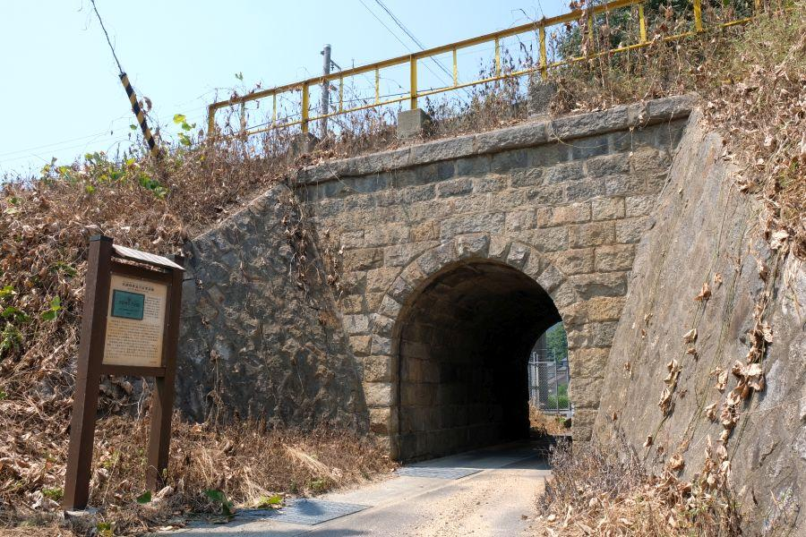
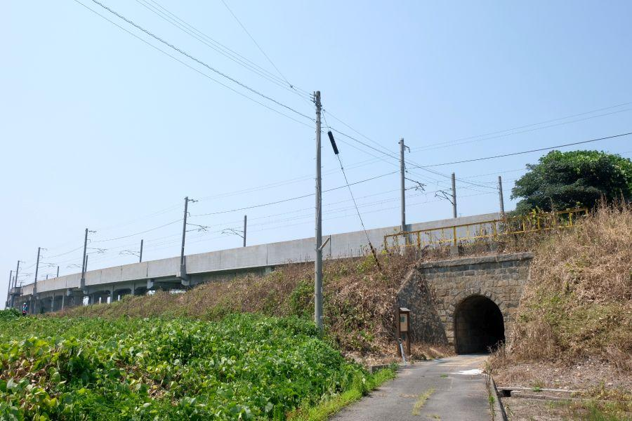
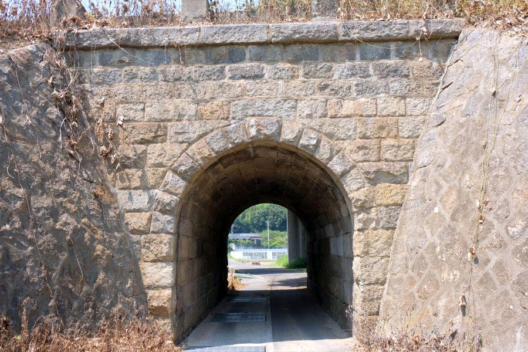
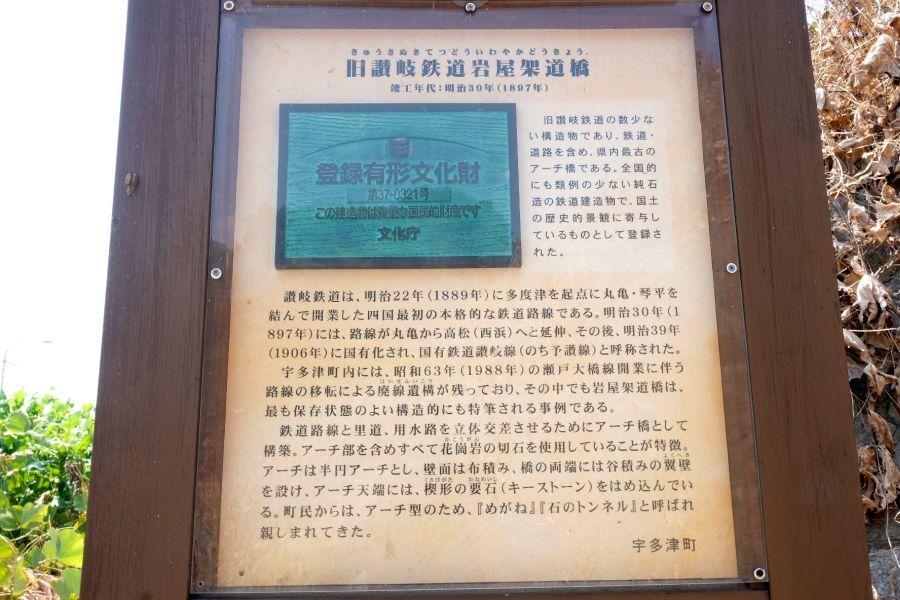
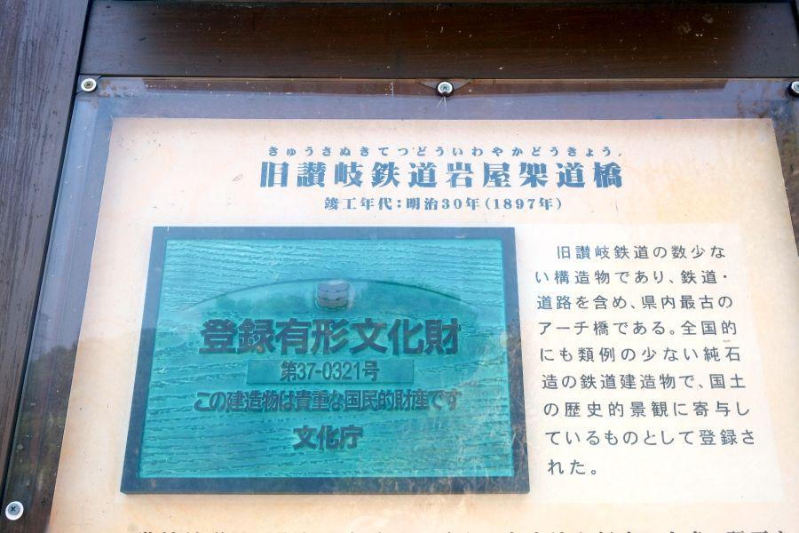
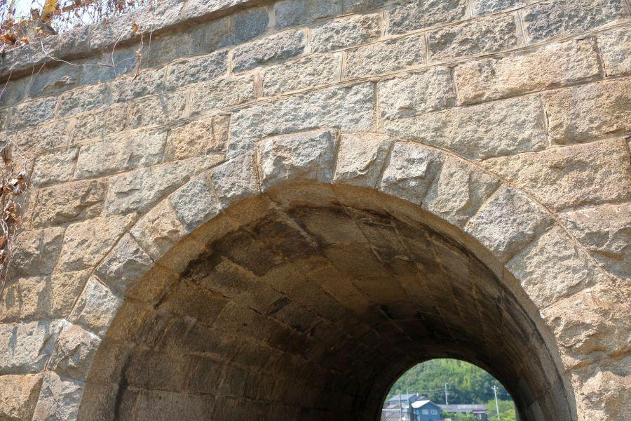
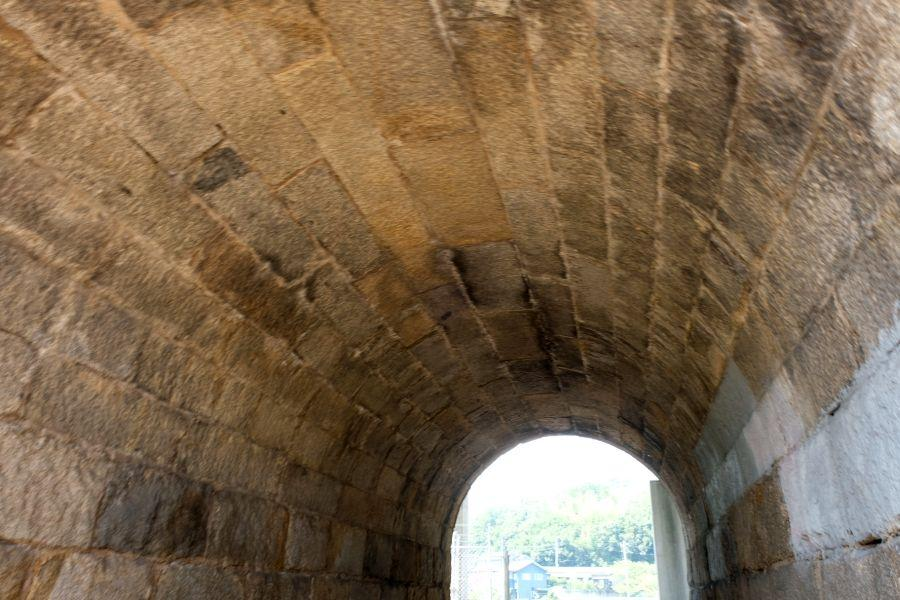
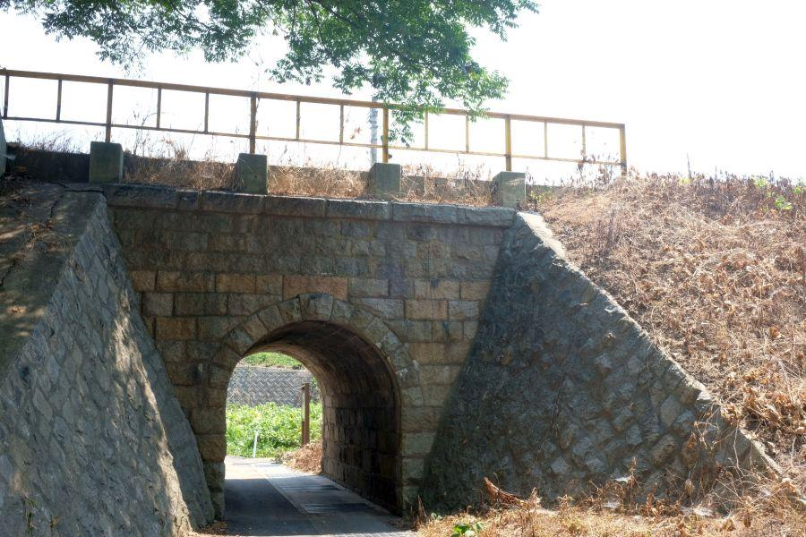

もしかしたら純讃岐づくり？ 石だけで造られたかつての鉄道橋 < 予讃線旧線・旧岩屋架道橋 / 香川県宇多津町 >

香川県に鉄道をもたらした讃岐鉄道。
"四国初の鉄道"
の称号は タッチの差で伊予鉄道に譲ったものの、現JR路線としては四国最古の歴史を誇ります。
僅か15年の短い営業期間でしたが、少なからず その遺構を目にすることができます。
瀬戸大橋への新線切り替えによって役目を終えた旧線

場所は香川県宇多津町(うたづちょう)。
背後に立つ高架線はJR予讃線の新線。本四間を連絡する 「快速マリンライナー」 や 「サンライズ瀬戸」、四国内を結ぶ特急 「いしづち」 「しまんと」 等、現在は全ての列車がそちらを走行します。
手前の築堤は それまで使用されていた予讃線の旧ルート。瀬戸大橋の開業に伴い、こちらの線は使用されなくなりました。
明治30年(1897)、讃岐鉄道の ＜ 丸亀－高松 ＞ 延伸に伴い開業した同区間ですが、宅地化等により 開業時の痕跡が失われて行った中で、こちらの橋は貴重な遺構です。
純石造の鉄道橋

岩屋架道橋(いわやかどうきょう / 香川県宇多津町)
最大の特徴は 「石材のみを用いて造られた拱渠」
拱渠(こうきょ)とは...
鉄道敷設のために土盛を行った際、その築堤の下に道路や水路を通すために造られた、アーチ状のトンネルの事。
日本国内では煉瓦を用いて造られたもの、煉瓦と石材を用いて造られたものが それぞれ多く見られるが、岩屋架道橋のように 資材が石材のみという拱渠は極めて珍しい。

香川県は庵治石を代表とする、古くから良質の花崗岩(かこうがん)の産地として有名ですが、こちらの拱渠は花崗岩を用いて作られています。
谷積みの翼壁
切石布積みの側壁
半yen(アーチ)を描く 迫受石(せりうけいし)・迫石(せりいし)
楔形の要石(かなめいし・キーストン)
上部に笠石
地元産の石材と 敏腕の石工たちを以って、持てる技術を惜しみなく注いで造られた、機能だけではなく 造形にもこだわりが感じられる、歴史的価値の高い橋。
もしかしたら純讃岐づくり...？

これが仮に、
香川県産花崗岩
讃岐の石工職人
だとすると、純国産であることはもちろん 香川県の資材・技術のみで造られたことになります。
そこは記録が残っていないので 「もしかしたら？」 のストーリーですが、讃岐の石工たちの技術の高さからすれば そうであっても不思議ではありません。
いずれにしろ、当時の鉄道敷設工事の多くが 外国人技術者に高い賃金を支払って行われていた(＝お雇い外国人)時代。ここでは先進的な取り組みが行われていたことになります。
当時のままの石造り

燦然と輝くキーストン。
内部をくぐってみます。

当時のまま現存する石のアーチ。

どれを取っても、素晴らしい技術力であることは間違いありません。
宇多津町は香川県最小面積の自治体ながら、人口の伸び率は県内一。宅地開発や大型量販店の誘致などの開発が盛んなエリアです。
岩屋架道橋は文化財に登録されているため 急な取り壊し等は無さそうですが、その古さ故 地震が起こった時など、破損が考えられます。
確かな形が残っている今、訪問した方が良さそうです。
旧讃岐鉄道岩屋架道橋
< 自家用車 >
高松駅から 約40分、23km
高知龍馬空港から 約35分、29km
< 列車 >
宇多津駅下車 徒歩約34分、2.7km
坂出駅下車 徒歩33分、2.5km
※ 主な地点からの最速・最短距離